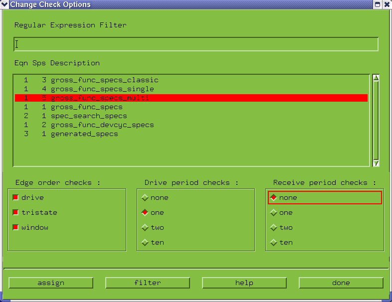

Changing the Check Options
The check options let you set edge order checks - drive, tristate and window - for the drive and receive periods. The number of periods over which the check should be made (1 or 2) is also definable.
- Choose .
A screen similar to that of the figure below appears.

- Highlight the Specification Set whose check status you want to change.
- Select which Edge Order checks you want to perform.
- Select how many Drive periods over which you want to check.
- Select how many Receive periods over which you want to check.
- Click assign.
- Repeat these last steps as often as required (for other specification sets), and click done when finished.
Functional changes
- Introduced before SmarTest 6.3.2